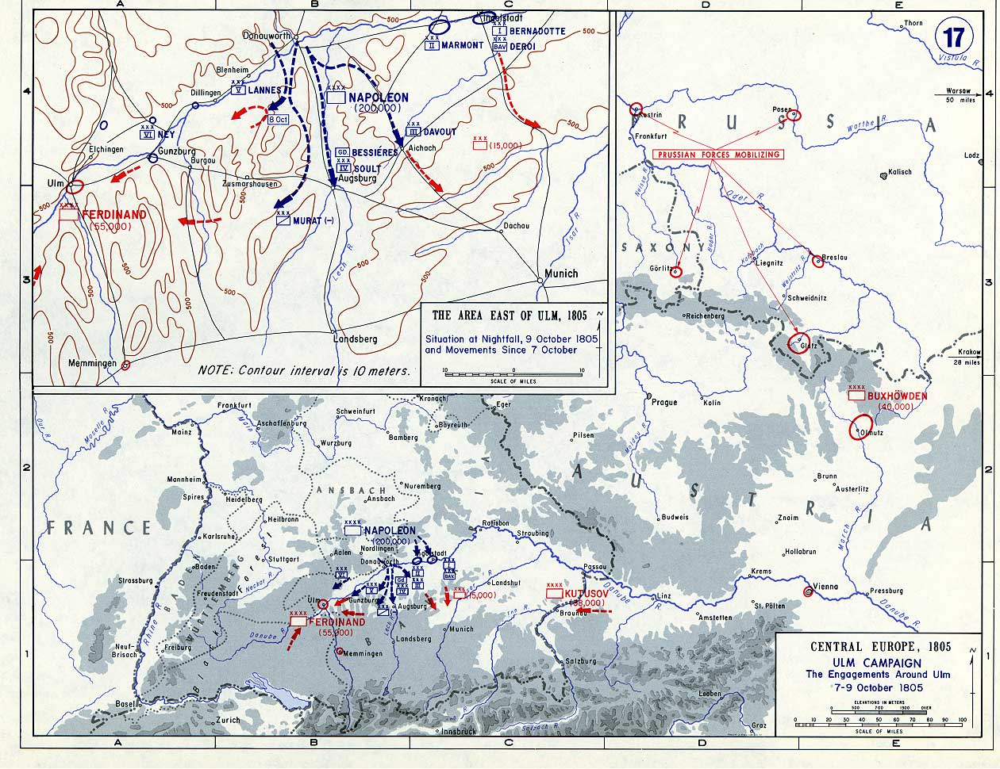

Cuộc liên minh quân sự lớn đầu tiên của các cường quốc Châu Âu tiến công vào nước Pháp năm 1792, trước Napoléon, đã bị đánh bại và bị thủ tiêu năm 1797 với Hòa Ước Campo Formio ký giữa tướng Bonaparte và những đại diện toàn quyền nước Áo. Cuộc liên minh thứ hai tiến công nước Pháp bị Bonaparte đánh bại lúc Bonaparte quay trở về Pháp và cũng bị tan rã sau sự phản bội của Pavel đệ nhất và khi nước Áo buộc phải chấp nhận Hòa Ước Luneville năm 1801. Năm 1805, Napoléon lại phải đối phó với cuộc tiến công thứ ba của các đại cường quốc Châu Âu. Một cuộc đọ sức mới và lớn lao đang được chuẩn bị.
Vào những năm 1804 - 1805, Napoléon nghĩ đến “một cuộc chiến tranh đế quốc” trên đất Anh, nghĩ đến “chiếm London và Ngân Hàng nước Anh”, nhưng Napoléon đã phải tiến hành cuộc chiến tranh ấy vào năm 1805 và chấm dứt nó không phải trước cửa thành London mà trước thành Vienna, tuy rằng đối phương của ông ta vẫn chỉ là một.
Vung tiền bừa bãi, William Pitt đang thực hiện nhiệm vụ thành lập Khối Liên Minh mới. Một sự hốt hoảng thật sự đã đè lên nước Anh kiêu ngạo. Vào cuối năm 1804 và đầu năm 1805, trại lính Boulogne do Napoléon lập nên đã trở thành một lực lượng quân sự đáng sợ. Một đội quân rất lớn, được trang bị hết sức đầy đủ, chỉ còn đợi lệnh đổ bộ khi sương mù bắt đầu phủ lên biển Manche. Ở Anh, người ta đang cố tổ chức một thứ tổng động viên. Như vậy là người Anh chỉ còn biết đặt hy vọng vào Khối Liên Minh. Nước Áo nhìn tình thế bất trắc một cách hài lòng. Những sự hy sinh mà nước Áo phải chịu đựng sau Hòa Ước Luneville, và nhất là từ khi Napoléon thi hành chính sách thống trị ở những nước nhỏ ở miền Tây và Nam nước Đức nặng nề đến mức độ mà nước Áo chỉ còn hy vọng duy nhất là trông chờ một cuộc chiến tranh để khỏi bị tụt xuống địa vị cường quốc loại hai. Và thời cơ tiến hành cuộc chiến tranh đó đã đến với số tiền của nước Anh. Gần như đồng thời với việc tiến hành thương lượng với Áo, Pitt cũng bắt liên lạc với nước Nga.
Napoléon biết rằng Anh rất trông mong vào một cuộc xung đột vũ trang mà Áo và Nga sẽ chiến đấu ở lục địa cho Anh. Napoléon cũng biết rằng nước Áo vừa tức giận vừa sợ hãi trước những cuộc thôn tính miền Tây nước Đức của Napoléon sau Hòa Ước Luneville, nên Áo sẵn sàng nghe theo những lời đường mật của chính phủ Anh. Và ngay từ năm 1803, qua một vài lời nói của Napoléon, người ta hiểu rằng Napoléon chưa dám bảo đảm chắc chắn là sẽ chiến thắng Anh, chừng nào bạn đồng minh bất trắc của Anh trên lục địa - “bọn đánh thuê”, như Napoléon đã gọi một cách khinh mỉa - chưa bị đánh bại. Napoléon tuyên bố với Talleyrand: “Nếu Áo nhảy vào cuộc thì điều đó sẽ có nghĩa là chính Anh buộc Pháp phải xâm chiếm Châu Âu...”.
Ngay sau khi lên ngôi, Hoàng Đế Nga Aleksandr đã chấm dứt cuộc đàm phán để kết bạn đồng minh với Napoléon do cha mình tiến hành. Aleksandr hiểu hơn ai hết “cơn trúng phong” đã làm Pavel đệ nhất chết, vì một lẽ dễ hiểu là chính Aleksandr đã đóng một vai trò quan trọng trong việc chuẩn bị sự cố đó.
Vị Nga Hoàng trẻ tuổi cũng biết bọn quý tộc đã dốc sang Anh những nông phẩm chủ yếu và lúa mì trong lãnh địa của họ, quan tâm đến tình hữu nghị với Anh tới mức nào. Ngoài những lý do này, còn một lý do khác nữa rất quan trọng. Vào mùa xuân năm 1804, người ta đã có thể thấy hy vọng được rằng Khối Liên Minh mới sẽ gồm có Anh, Áo, vương quốc Naples (ít ra người ta đã nghĩ thế lúc bấy giờ), nước Phổ đang sợ hãi trước những hoạt động của Napoléon trên sông Rhine. Liệu nước Nga còn đợi dịp nào tốt hơn nữa để gây chiến với nhà độc tài Pháp? Napoléon sẽ không có những phương tiện và lực lượng cần thiết để đương đầu với cả một bè bối thù địch này. Việc Napoléon hành hình công tước Enghien đã làm bùng ra ở khắp Châu Âu quân chủ, lúc ấy đang sẵn sàng hành động, một cuộc vận động mãnh liệt rất hiệu nghiệm phản đối “con yêu tinh đảo Corsica” đã làm đổ máu một hoàng tử của dòng họ Bourbon. Người ta quyết định triệt để lợi dụng biến cố xảy ra rất hợp thời ấy. Ai nấy đều vội vã khuyên Đại Công Tước xứ Baden phản đối việc vi phạm trắng trợn lãnh thổ xứ Baden khi người ta bắt công tước Enghien, nhưng vị vương công xứ Baden ấy, sợ gần chết, lặng thinh, còn hối hả tìm cách hỏi ngầm giới thân cận của Napoléon xem Napoléon có được hài lòng trong cách xử sự của những nhà chức trách xứ Baden trong việc ấy không, và các nhà chức trách đó có thi hành nghiêm chỉnh những yêu sách của hiến binh Pháp không. Bọn vua chúa khác cũng chỉ dám bộc lộ kín đáo sự tức giận của họ với những người thân thiết và lòng dũng cảm của họ nhiều hay ít là do biên giới đất nước họ cách biên giới đất nước Napoléon xa hay gần quyết định. Chính điều đó cắt nghĩa tại sao Hoàng Đế Nga lại là người lên giọng kiên quyết nhất. Bằng một bức công hàm đặc biệt, Aleksandr đã dứt khoát phản đối việc vi phạm lãnh thổ xứ Baden, Aleksandr nhấn mạnh tính nghiêm trọng của việc vi phạm về phương diện luật quốc tế.
Napoléon đã đọc cho Bộ Trưởng Ngoại Giao của mình viết bức thư trả lời nổi tiếng mà Aleksandr không bao giờ quên và cũng không bao giờ tha thứ được, vì suốt đời Aleksandr chưa bị ai làm nhục một cách tàn tệ như vậy. Đại ý bức thư nói rằng: Công tước Enghien bị bắt vì đã tham dự vào một âm mưu chống Napoléon; nay thí dụ Hoàng Đế Aleksandr biết được rằng bọn thủ phạm giết người cha quá cố của mình là Pavel đệ nhất, hiện đang ở nước ngoài, nhưng chỉ có một cách cụ thể để có thể bắt bọn chúng, và nếu Aleksandr đã cho bắt bọn chúng thật thì Napoléon đâu dám phản đối việc vi phạm lãnh thổ của một nước ngoài do Aleksandr làm. Thật không còn có cách nào buộc tội Aleksandr rõ ràng, công khai và chính thức hơn nữa về tội giết cha. Toàn Châu Âu đều biết bọn mưu sát Hoàng Đế Pavel đã được sự đồng tình của thái tử Aleksandr và gã Nga Hoàng trẻ tuổi ấy, sau khi lên ngôi, không dám đụng đến lông chân của bá tước Palem, của tướng Bennigsen, của Dubov, của Talidin cũng như của bất cứ một kẻ nào khác, mặc dầu bọn này không sống ở “nước ngoài” mà sống đàng hoàng ở Peterburg và được tiếp đón vào cung điện Mùa Đông.
Mối căm thù nung nấu của Aleksandr đối với cái người đã làm cho Aleksandr nhục nhã ê chề đã có tiếng vang mạnh mẽ trong bọn quý tộc và triều thần mà chúng đã biết tâm trạng. Để mở rộng cơ sở giai cấp trong các hành động quân sự của mình và gây thiện cảm trong các giới yêu chuộng tự do, Aleksandr sẵn sàng gia nhập Khối Liên Minh thứ ba, đã công khai phát biểu bằng giấy tờ nỗi thất vọng của ông ta do những âm mưu thống trị thế giới của Napoléon gây nên và những mối tưởng nhớ, luyến tiếc mà ông ta cảm thấy về sự tiêu vong của nền Cộng Hòa Pháp. Đó là một sự giả nhân giả nghĩa vụng về: Thật ra, có bao giờ Aleksandr quan tâm đến số phận của nền Cộng Hòa Pháp, nhưng Aleksandr lại có mắt tinh và đúng để hiểu rằng việc Napoléon biến nước Pháp thành một đế quốc chuyên chế, chính là một thời cơ để phá uy tín của Napoléon đối với một bộ phận nào đó trong xã hội ở Pháp và ở Châu Âu, đối với những người còn tưởng nhớ đến cách mạng. Lời chỉ trích đượm mùi tự do đó, phê phán Napoléon là một tên chuyên quyền độc đoán, từ miệng một thủ lĩnh độc tài của một đế quốc xây dựng trên chế độ nô lệ thốt ra, là một trong những giai thoại kỳ lạ nhất của thời kỳ trước khi chuẩn bị xong cuộc tiến công mới của Khối Liên Minh thứ ba chống đế quốc Pháp mới.
Không do dự gì, William Pitt bằng lòng cấp tiền cho Nga, ngoài ra còn tỏ ý sẽ cấp tiền cho cả Áo, vương quốc Naples, Phổ và tất cả những nước nào muốn chống Napoléon.
Trong khi ấy, Hoàng Đế Pháp đã làm gì? Lẽ dĩ nhiên là Napoléon đã biết thừa thủ đoạn ngoại giao của các đối phương, nhưng vì cuộc liên minh đang hình thành chậm chạp mặc dầu Pitt đã cố gắng nhiều, và vì đến mùa thu năm 1805, Napoléon vẫn thấy rằng Áo chưa sẵn sàng tham chiến được, nên một mặt Napoléon vẫn tiếp tục chuẩn bị đổ bộ lên đất nước Anh và, mặt khác, vẫn hoạt động như thể ở Châu Âu chẳng có ai ngoài ông ta. Ông ta thấy cần thiết phải sát nhập Piedmont, thì ông ta sát nhập; thấy cần phải thôn tính Genoa và Luke thì đã thôn tính; thấy cần phải xưng là vua nước Ý và phải làm lễ đăng quang ở Milan thì đã làm như thế (vào ngày 28 tháng 5 năm 1805); thấy cần phải đem một lô các quốc gia Đức nhỏ bé như hạt bụi làm tặng vật cho đồng minh của mình, hay đúng hơn là cho các chư hầu Đức của mình, như Bavaria chẳng hạn, ông ta đã làm.
Những vua chúa Đức có đất đai ở Tây Á, nơi mà nước Áo đã hoàn toàn bị loại trừ ra sau Hòa Ước Luneville, chỉ còn trông mong vào Napoléon cứu thoát. Bọn họ lũ lượt kéo đến Paris, khúm núm và đê tiện, chen chúc xô đẩy nhau trong phòng đợi của các cung điện và của các bộ, cam kết trung thành, xin xỏ một vài mảnh đất láng giềng, tố cáo lẫn nhau, mưu mô làm hại lẫn nhau, luồn lọt đám quần thần của Napoléon, chồng chất lên Talleyrand những lời cầu cạnh và của đút. Thoạt đầu, quần thần của Napoléon ngạc nhiên, nhưng ngay sau đó họ chẳng lấy làm lạ nữa, ở cung Tuileries, họ chú ý thấy một người trong đám tiểu vương Đức ấy đứng sau ghế Napoléon, còn Napoléon thì đang đánh bài, thỉnh thoảng hắn lại cúi gập lưng xuống hôn vội vào tay ông Hoàng Đế, nhưng ông ta chẳng hề để ý.
Mùa thu năm 1805, Napoléon tuyên bố với các đô đốc của mình rằng ông không cần đến ba, mà chỉ cần hai, thậm chí chỉ một thôi, một ngày yên tĩnh trên biển Manche với sự bảo đảm kiềm chế được hoạt động của hải quân Anh là có thể đổ bộ lên đất Anh. Mùa sương mù sắp đến. Từ lâu, Napoléon đã hạ lệnh cho đô đốc Villeneuve rời Địa Trung Hải đến Đại Tây Dương để bắt liên lạc với hạm đội biển Manche, sau đó Villeneuve có nhiệm vụ yểm hộ cuộc vượt eo biển và đổ bộ lên đất Anh. Nhưng, bất thình lình, gần như trong cùng một ngày, hai tin cực kỳ quan trọng đến với Napoléon lúc này đang ở Boulogne với quân sĩ: Tin thứ nhất là Villeneuve không thể thi hành mệnh lệnh của Napoléon ngay được, tin thứ hai là quân Nga đã lên đường đi gặp quân Áo đang sẵn sàng tiến công Napoléon và các bạn liên minh Đức của ông ta và các lực lượng đối phương đang tiến về phía Tây.
Tức khắc, không chút do dự, Napoléon thay đổi quyết định. Thấy rõ ràng là dẫu sao William Pitt cũng đã cứu được người Anh và vấn đề không phải là đổ bộ nữa, Napoléon bèn gọi ngay tướng thân cận là Daru và giao cho chuyển đến tư lệnh các quân đoàn những kế hoạch đã chuẩn bị sẵn: Tiến hành một cuộc chiến tranh mới với nước Áo và nước Nga chứ không phải với nước Anh nữa. Việc xảy ra ngày 27 tháng 8.
Thế là trại lính Boulogne, một công trình đã phải mất hai năm ròng để tổ chức, chấm hết, hết cả những mộng chiến thắng một kẻ thù dai dẳng và khó đánh tới vì được biển cả che chở! “Nếu 15 ngày nữa ta không ở London thì đầu tháng 11 ta sẽ đến Vienna”, Hoàng Đế Napoléon đã nói như vậy trước khi nhận được những tin tức đã làm thay đổi căn bản ý định trước mắt của ông ta. London thoát, nhưng Vienna phải trả nợ thay. Trong nhiều giờ liên tiếp, Napoléon truyền đạt kế hoạch chiến dịch mới. Mệnh lệnh bay đi tứ phía để lấy tân binh bổ sung cho các đội dự bị và để tổ chức việc tiếp tế cho quân đội hành quân tiến qua nước Pháp và xứ Bavaria đến giao chiến với quân địch. Những đội thông tin liên lạc hỏa tốc đến Berlin, Madrid, Dresden, Amsterdam, mang tới những chỉ thị ngoại giao đầy uy vũ và mệnh lệnh, đầy điều kiện và tặng phẩm quý báu hấp dẫn. Không phải Paris không hoang mang, nhốn nháo, người ta báo cáo Napoléon rằng các nhà buôn, những người gửi tiền nhà băng, các nhà kỹ nghệ đều phàn nàn thầm về khát vọng xâm lược và đường lối ngoại giao của Napoléon là đã không tính đến khó khăn và cho rằng cá nhân Napoléon phải chịu trách nhiệm về cuộc nổi dậy mới và đáng sợ này của toàn thể Châu Âu chống lại nước Pháp. Người ta phản đối ngầm, dè dặt, nhưng người ta vẫn phản đối.
Nhờ vào sự tổ chức quân sự tài tình của mình, Napoléon chỉ mất có mấy ngày là đã nhổ được trại lính Boulogne khổng lồ, tổ chức hành quân và bổ sung cho quân đội đã tập trung ở đó, rồi từ bờ biển Manche qua nước Pháp, tới đất Bavaria, đất bạn đồng minh của ông. Napoléon cấp tốc hành quân, đi vòng lên phía Bắc quân Áo đóng trên bờ sông Danube và có vị trí Ulm kiên cố án ngữ sườn bên trái.
Nếu Khối Liên Minh quân sự thứ ba, đã thành hình trong tư tưởng của các hội viên chính thức từ giữa năm 1804, mà mãi một năm rưỡi sau, vào mùa thu năm 1805, mới xuất trận thì một trong những lý do chính là để chuẩn bị lần này cho thật chu đáo và để bảo đảm thắng lợi. Chưa bao giờ quân đội Áo lại được trang bị và tổ chức tốt như lần này. Đội quân của Mack có nhiệm vụ đương đầu cuộc chạm trán đầu tiên với quân tiền vệ của Napoléon, và người ta đặt rất nhiều hy vọng lớn lao vào quân đội ấy. Cuộc chạm trán đầu tiên này quyết định nhiều vấn đề ở Áo, Anh, Nga và trên toàn cõi Châu Âu, người ta mong chờ thắng lợi của Mack và cầm chắc thắng lợi vì không những các sư đoàn của Mack đã được chuẩn bị chu đáo và hoàn chỉnh về mọi mặt, mà còn vì các thủ lĩnh Khối Liên Minh cho là Napoléon sẽ không một lúc xuất toàn bộ quân ở trại Boulogne và Napoléon cũng sẽ không thúc toàn bộ lực lượng tiến gấp từ Boulogne về phía Đông Nam; cho rằng dù Napoléon có làm như vậy chăng nữa - người ta nghĩ - thì ông ta cũng sẽ không có cách gì điều động và tập trung quân kịp đến nơi đã định được.
Khi tiến vào Bavaria, Mack biết chắc chắn sẽ phải chạm trán với Hoàng Đế Pháp ở đó.
Trước cũng như sau Napoléon, sự trung lập của các nước thứ yếu đều chỉ có trên giấy tờ. Luôn luôn lâm vào tình trạng sợ hãi, vương hầu xứ Bavaria dao động trước sự đe dọa của Khối Liên Minh mạnh mẽ Áo, Nga, do Anh cầm đầu, đang bắt vương hầu nhập khối và sự đe dọa của Napoléon, người cũng đang tìm cách biến vương hầu thành nước đồng minh của mình. Thoạt tiên, vương hầu Bavaria ký một mật ước với quân Liên Minh, hứa hẹn giúp đỡ cho nước Áo trong cuộc chiến tranh vừa mới bùng nổ, nhưng vài ngày sau, khi đã suy nghĩ kỹ, vương hầu cùng với gia đình và các thượng thư của mình trốn đến thành Würzburg, nơi mà một binh đoàn Pháp do tướng Bernadotte chỉ huy đang tiến đến theo lệnh Napoléon, rồi ông ta cuốn gói sang hàng ngũ Napoléon.
Vương hầu xứ Württemberg và Đại Công Tước xứ Baden cũng trở mặt nhanh chóng như vậy. “Ngậm miệng lại, họ tạm thời bắt trái tim Đức của họ phải im hơi lặng tiếng”, đó là những điều tủi nhục được nói lên ở trong các sách giáo khoa Đức in gần đây dùng trong các trường trung học. Để khen thưởng tinh thần kháng cự dũng cảm của trái tim Đức trước những yêu sách của Khối Liên Minh, các vương hầu xứ Bavaria và Württemberg được Napoléon phong vương, cái danh hiệu mà con cháu họ còn hưởng mãi đến khi nổ ra cuộc cách mạng tháng 11 năm 1918; cũng hệt như hai vị vua mới mẻ kia, Đại Công Tước xứ Baden được mở rộng bờ cõi trên lãnh thổ nước Áo. Bọn họ còn xin tiền nhưng Napoléon đã từ chối.
Đường vào xứ Bavaria bỏ ngỏ. Các Thống Chế nhận được lệnh hành quân cấp tốc hơn, và thế là từ khắp các ngả, đi không dừng không nghỉ, họ cùng tiến về phía sông Danube. Theo lời một quan sát viên quân sự Phổ thì Bernadotte, Davout, Soult, Lannes, Ney, Marmont, Augereau cùng với các quân đoàn trực thuộc, cũng như Murat với đội kỵ binh của mình đã chấp hành những chỉ thị rành mạch của Hoàng Đế với mức độ chính xác như bộ máy đồng hồ. Chưa đầy ba tuần lễ, không đến 20 ngày, một đoàn quân to lớn đối với thời bấy giờ đã hành quân di chuyển từ biển Manche đến sông Danube mà hầu như không có bệnh binh và người đi rớt lại sau. Trong nhiều định nghĩa của Napoléon về nghệ thuật chiến tranh, có lần Napoléon đã nói phải làm thế nào để quân đội “khi sinh hoạt thì phân tán và khi đánh thì tập trung”. Các Thống Chế đã hành quân theo nhiều đường khác nhau do Hoàng Đế chỉ định từ trước, điều đó làm cho việc tiếp tế được thuận lợi, không bị ùn tắc lại ở dọc đường, và khi đến nơi, họ đã tập trung cả ở xung quanh thành Ulm, và tướng Mack cùng với phần lớn quân đội Áo như bị nhốt trong một cái túi.
Napoléon rời Paris ngày 24 tháng 9, đến Straßburg ngày 26, và đội quân của ông cũng đã tức khắc vượt sông Rhine lúc bắt đầu cuộc chiến tranh; khi qua Straßburg, Napoléon đã tiến hành tổ chức biên chế quân đội lần cuối cùng, và tiện đây xin nói một chút.
Bộ đội tiến đánh nước Áo được chính thức gọi là đại quân để phân biệt với các bộ đội dùng vào việc thành lập các đơn vị đồn trú hoặc các quân đoàn đóng giữ ở những vùng xa mặt trận. Đại quân gồm bảy quân đoàn đặt dưới sự chỉ huy của các tướng xuất sắc nhất, được cất nhắc lên hàng Thống Chế sau khi Napoléon làm lễ thụ phong Hoàng Đế.
Tổng quân số của bảy quân đoàn này lên tới 186.000 người. Mỗi quân đoàn đều có bộ binh, kỵ binh, pháo binh và tất cả các ngành hậu cần cần có trong một quân đội. Napoléon coi mỗi quân đoàn này như một tổ chức quân đội riêng biệt. Chủ lực quân của kỵ binh và pháo binh không phụ thuộc vào một Thống Chế nào và cũng không nằm trong biên chế một quân đoàn nào, mà tổ chức thành những đơn vị riêng biệt đặt dưới sự chỉ huy trực tiếp của Hoàng Đế: Thí dụ như Thống Chế Murat được Napoléon bổ nhiệm làm tổng chỉ huy kỵ binh gồm tới 44.000 người, nhưng cũng chỉ như người giúp việc, như phái viên liên lạc và chấp hành mệnh lệnh của Napoléon. Lúc cần thiết, Napoléon có thể tự ý dốc toàn bộ pháo binh và kỵ binh của mình đến ứng cứu cho một trong bảy quân đoàn.
Ngoài các quân đoàn và các đội dự bị của pháo binh và kỵ binh ra, còn có đội cận vệ của Hoàng Đế gồm 7.000 lính ưu tú (đây chỉ mới nói về năm 1805, sau này còn nhiều hơn nữa). Cận vệ binh gồm có các trung đoàn lính cận vệ và khinh kỵ binh hoặc khinh bộ binh, hai liên đội cảnh binh đi ngựa, một liên đội “Mamelukes” tuyển mộ ở Ai Cập và sau hết là một “tiểu đoàn Ý” vì Napoléon không những là Hoàng Đế nước Pháp mà còn là vua vùng Bắc và Trung Ý đã bị Napoléon chinh phục. Thực ra trong “tiểu đoàn Ý” ấy có nhiều người Pháp hơn là người Ý. Người ta chỉ tuyển vào đội cận vệ ngự lâm những người xuất sắc đặc biệt. Họ được trả lương cao, được nuôi dưỡng đặc biệt, trang phục đẹp, đội mũ cao có lông và đóng sát ngay tổng hành dinh của Hoàng Đế. Bản thân Napoléon biết rõ đời sống và quá trình công tác của một số đông trong đội quân ấy.
Napoléon rất quan tâm đến việc sắp xếp cán bộ chỉ huy, ông không ngần ngại gì mà không cấp “bằng” tướng cho những người chưa đầy 40 tuổi. Cũng có một số mới 34 tuổi đã được phong Thống Chế. Dưới thời Napoléon, tuổi trẻ là một thuận lợi cho sự thăng cấp chứ không phải là một trở ngại như hết thảy mọi quân đội thời ấy, bất kể quân đội nước nào. Kỷ luật do Napoléon đặt ra có một tính chất đặc biệt. Napoléon không cho dùng nhục hình trong quân đội. Toà án quân sự kết án tử hình hoặc đưa đi đày đối với những tội nặng, còn tội nhẹ chỉ kết án tù ở những nhà tù của quân đội.
Ngoài ra, còn có một tổ chức khác có quyền hành lớn, đó là toà án danh dự; tuy hội đồng này không được một luật lệ nào phê chuẩn nhưng với sự thừa nhận ngầm của Napoléon, nó cứ hoạt động trong toàn quân. Đây là chứng cớ về vấn đề ấy: Có hai người lính, mà tất cả đại đội đều không thấy họ có mặt trên chiến trường; nhưng sau đó, hai người này lại xuất hiện và trình bày lý do vắng mặt của họ. Cả đại đội cho rằng họ đã lẩn trốn vì hèn nhát và đã chọn trong binh lính lấy ngay ba người làm quan tòa. Cái tòa án ấy nghe tội phạm trình bày, kết họ án tử hình và xử bắn ngay lập tức. Các cấp chỉ huy đều biết cả nhưng không can thiệp và việc ấy đến đó cũng là xong. Không một sĩ quan nào được tham dự cuộc xét xử và cũng không được biết (ít ra thì cũng là không được chính thức biết) đến án tử hình đó.
Cái ông vua chuyên chế, đã tự phong cho mình chức Hoàng Đế cha truyền con nối và bắt Giáo Hoàng phải làm lễ thụ phong cho mình, qua việc cưới xin đã liên minh được từ năm 1810 với dòng họ đang trị vì nước Áo, đã biết gây cho binh lính lòng tin rằng, trước đây cũng như bây giờ, họ là những người bảo vệ tổ quốc chống lại bọn Bourbon, chống lại sự can thiệp của nước ngoài và chính bản thân Napoléon cũng chỉ là người lính số 1 của nước Pháp... Thực ra, dưới mắt Napoléon, binh lính chỉ là những cái “mồi cho đại bác”, Napoléon thường nói như vậy, nhưng binh lính tin tưởng và phục tùng mù quáng Napoléon thì lại vẫn gán cho Napoléon những biệt hiệu suồng sã, bạn bè và thân thiết. Đối với họ, bạo chúa Caesar, người mà Châu Âu run sợ và các vị vua chúa cúi rạp mình xuống, chỉ là một người lính. Trong bọn họ với nhau, họ gọi Napoléon là “Chú cai nhỏ”, “Chú bé đầu trọc”. Họ cũng tin vào câu nói của Napoléon: “Trong bao đạn của mỗi người lính đều có một chiếc gậy Thống Chế”. Đấy không phải là một câu nói vô ích. Họ thích thú nhớ lại võ nghiệp của Murat, Bernadotte, Lefebvre đã bắt đầu bằng những cấp bậc nào, cũng như vô số những danh tướng quyền cao chức trọng khác hiện đang ở bên cạnh Hoàng Đế.
Napoléon hoàn toàn tin vào sĩ quan và binh lính của mình; nhưng đối với các tướng lĩnh và Thống Chế, không phải người nào cũng được Napoléon tin, có tin cũng không khỏi không có phần dè dặt. Về vai trò quân sự của các Thống Chế thì vấn đề là như thế này: Napoléon tập hợp quanh mình một loạt nhân vật xuất sắc về nghệ thuật chiến tranh, những người này đều chỉ có một điểm giống nhau, tuy trình độ khác nhau: Ai cũng đều có nhận thức nhanh, nắm tình hình và hạ quyết tâm nhanh chóng, tài phán đoán nhạy bén của người lính tìm ra trong nháy mắt phương sách thoát khỏi một tình huống bế tắc, tinh thần ngoan cường chiến đấu khi cần thiết, và nhất là Napoléon tập cho họ đoán được ý định của mình khi chỉ nói nửa lời và sau đó tự họ thực hiện lấy. Tài chiến lược của Napoléon đã tạo cho các Thống Chế thành những người chấp hành hết sức chính xác ý định của mình mà không làm mất tính năng động độc lập của họ trên chiến trường. Một tay kiếm mù chữ và thật thà như Lefebvre, người quý phái lạnh lùng và nghiêm khắc như Davout, người kỵ binh hăng hái như Murat, nhà đồ bản và sĩ quan tham mưu thiên tài như Berthier, tất cả đều là những nhà binh pháp xuất chúng và đầy sáng tạo. Những nhân vật như Ney hay Lannes, về phương diện ấy, cũng không thua kém gì Bernadotte quỷ quyết và lo xa, Masséna làm việc có phương pháp, hoặc Marmont khô khan và thận trọng. Thật vậy, đối với họ, lòng dũng cảm cá nhân được coi là tuyệt đối cần thiết vì bản thân họ phải làm gương. Họ đã nêu tấm gương dũng cảm chiến đấu hết sức đặc biệt. Một lần, khi được người ta khen ngợi mình vì đã bao phen dũng cảm dẫn đầu kỵ binh làm nhiệm vụ, Lannes đã thốt lên một cách buồn bực: “Một người kỵ binh mà 30 tuổi chưa chết thì chưa phải là một người kỵ binh”. Lúc đó Lannes 34 tuổi, và bốn năm sau, Lannes bị đạn đại bác giết chết ở chiến trường. Lannes không những là một người kỵ binh quả cảm mà còn là một tướng tài. Những người phù tá đã được Napoléon tuyển lựa và cất nhắc lên hàng đầu là những người như vậy.
Năm 1805, khi mở màn cuộc chiến tranh chống lại Khối Liên Minh quân sự thứ ba, họ hãy còn gần đủ mặt. Chỉ thiếu Desaix đã tử trận ở Marengo. Một người nữa vắng mặt, người mà Napoléon coi trọng như những người khác: Đó là Moreau bị phát vãng, đang sống ở Châu Mỹ. Napoléon, với thiên tài rực rỡ của mình, đã đứng đầu một quân đội như vậy, và được giúp việc bởi những trợ thủ như vậy đó.
Quân đoàn của Soult và của Lannes, cũng như kỵ binh của Murat đã vượt qua sông Danube và bất ngờ đột kích vào sau lưng quân của Mack. Thấy tình hình nguy khốn, một bộ phận quân Áo chạy thoát được về phía Đông, nhưng đại bộ phận bị Ney dồn vào Ulm.
Xung quanh Mack, vòng vây càng ngày càng siết chặt. Còn một khả năng là chạy trốn, nhưng viên tướng Áo đã bị bọn gián điệp khôn khéo của Napoléon đánh lừa, nhất là Shumaster, kẻ lợi hại nhất bọn, quả quyết xin Mack cố thủ và chẳng bao lâu nữa Napoléon sẽ phải bỏ vây vì ở Paris đã nổ ra một cuộc nổi dậy chống lại Napoléon. Mack nghe với mối nghi ngờ, tên gián điệp liền báo cho quân Pháp biết; người ta bèn cho in một số báo đặc biệt nói về cuộc nổi loạn bịa đặt ở Paris. Shumaster mang tờ báo đó cho Mack, Mack đọc và yên tâm.
Ngày 15 tháng 10, Thống Chế Ney và Lannes chiếm được các điểm cao xung quanh Ulm. Tình thế của Mack trở nên tuyệt vọng. Napoléon cho người đến thương lượng đòi Mack phải đầu hàng, bằng cách đe dọa sẽ không tha một ai nếu Napoléon buộc phải đánh vào. Ngày 20 tháng 10 năm 1805, Mack giao vị trí Ulm cho Napoléon và bộ đội của Mack còn nguyên vẹn đã đầu hàng với tất cả vũ khí, quân dụng, pháo binh và cả quân kỳ. Napoléon thả cho Mack về, còn tù binh thì đưa về Pháp dùng vào việc khác nhau.
Ít lâu sau Napoléon nhận được báo cáo là Murat đã chặn đánh và bắt làm tù binh được hơn 8.000 người trong số những người đã may mắn rời bỏ Ulm trước khi đầu hàng.

.Sau cuộc thất bại kinh khủng và nhục nhã ở Ulm, cuộc chiến tranh của Khối Liên Minh quân sự thứ ba thế là đã thất bại, nhưng trong các bộ tham mưu Áo và Nga chỉ có một vài người hiểu ngay được điều đó. Không nán lâu ở Ulm, Napoléon và các Thống Chế của ông tiến thẳng đến Vienna, theo hữu ngạn sông Danube. Trong lúc truy kích, quân Pháp còn bắt được thêm rất nhiều tù binh. Số tù binh bắt được trong các trận trước khi thành Ulm thất thủ lên tới 29.000 người. Cộng với số 32.000 bị bắt ở Ulm, số tổn thất của quân Áo lên tới 61.000 người, chưa kể số bị chết, bị thương nặng không sa vào tay địch và số mất tích.
Trong bản thông báo những kết quả đầu tiên của chiến dịch này cho binh lính, Napoléon đã nói: “200 khẩu pháo cùng với tất cả các kho tàng đạn dược, khí tài kỹ thuật, 90 lá cờ, toàn bộ tướng lĩnh của quân thù đã nằm trong tay chúng ta. Cả cái đội quân ấy không thoát nổi 15.000 tên”.
Quân Pháp tiến rất nhanh đến Vienna. Nhưng ngày 11 tháng 11, bộ đội của Kutuzov cũng đột kích vào quân đoàn của Mortier gần Durnstein, bên bờ tả ngạn sông Danube và đã giáng cho Mortier một trận liểng xiểng. Ngày 13 tháng 11, có kỵ binh của Murat đi trước dẫn đường và cận vệ hộ tống, Napoléon tiến vào Vienna và chọn hoàng cung Schönbrunn làm bản doanh. Trước khi vội vã bỏ chạy khỏi thủ đô, Hoàng Đế Francis nước Áo đã gửi cho Napoléon đề nghị đình chiến, nhưng Napoléon không chấp nhận.
Tất cả hy vọng của Khối Liên Minh từ nay chỉ còn trông vào quân đội Nga và Nga Hoàng, nhưng chính bản thân Nga Hoàng thì lại đặt hy vọng của mình vào sự gia nhập liên minh của nước Phổ. Không bao lâu nữa, tất cả những hy vọng này sẽ tan như mây khói.
Vào những ngày tháng 10 năm 1805, trong lúc Mack đang bị hãm ở trong thành phố Ulm sắp sửa đầu hàng, rồi cuối cùng đã phải chịu đầu hàng thì Aleksandr đệ nhất đã có mặt ở Berlin và thúc giục Frederick Wilhelm đệ tam, vua nước Phổ, tuyên chiến với Napoléon. Frederick cũng ở trong tình trạng hoảng sợ và lưỡng lự như những vương hầu miền Nam nước Đức. Ông ta sợ cả Aleksandr lẫn Napoléon. Trong những lời đe dọa xa xôi, Aleksandr cũng đã đi đến chỗ để lộ ra rằng quân đội Nga sẽ có thể dùng vũ lực để đi qua nước Phổ, nhưng khi vua Phổ chống lại với một thái độ kiên quyết bất ngờ và chuẩn bị đối phó lại thì Aleksandr lại ưa đấu dịu. Vả lại, lúc ấy có tin rất hợp với ý đồ của Aleksandr là Napoléon đã ra lệnh cho Thống Chế Bernadotte, trên đường sang Áo, đi qua biên trấn Anspact, một thuộc địa của Phổ ở miền Nam, như vậy là đã vi phạm trắng trợn sự trung lập của nước Phổ; Frederick, một mặt bị hành động độc tài của Napoléon xúc phạm, mặt khác không ngờ tới thắng lợi của đại quân Napoléon (lúc này, Ulm chưa bị thất thủ) nên bắt đầu muốn tham gia chiến tranh với Khối Liên Minh thứ ba. Theo một mật ước cuối cùng được ký giữa Frederick và Aleksandr, nước Phổ hứa sẽ gửi tối hậu thư cho Napoléon. Xung quanh việc này, một màn kịch hết sức lố lăng đã diễn ra: Frederick Wilhelm, Hoàng Hậu Louise và Aleksandr tới lăng huyệt của Frederick đệ nhị cùng nhau thề thốt tình hữu hảo đời đời.
Cái vô nghĩa của màn kịch ấy, thuộc loại tình cảm mà thời đó người ta ưa thích, là ở chỗ trước đây nước Nga đã gây ra cũng với chính gã Frederick đệ nhị đó một cuộc chiến tranh bảy năm trời[30]. Trong bảy năm đó, lúc thì Frederick thắng quân Nga, lúc thì quân Nga giáng cho Frederick những trận thất bại đau đớn; quân Nga cũng đã chiếm được Berlin và gần như dồn Frederick vào con đường tự sát. Sau tấn hài kịch lạ lùng ấy và sau khi đã nhiệt liệt bày tỏ mối tình hữu hảo đời đời giữa người Đức và người Nga, Aleksandr rời Berlin để đi thẳng đến chiến trường Áo.
Ở Anh và ở Áo, người ta mừng quýnh. Nếu toàn bộ quân đội Phổ vượt qua rặng “núi Kim Khi” (Ore Mountains) và tham chiến thì Napoléon sẽ phải thua. Báo chí đều đã nói như vậy sau khi hứng thú thuật lại lời thề thốt mối tình hữu nghị Nga - Phổ trước linh cữu Frederick đại đế.
Chú thích:
[30] Chiến tranh bảy năm, cuộc chiến tranh xảy ra dưới thời Louis XV, từ năm 1758 đến năm 1763 giữa một bên là Pháp, Áo, Nga và một bên là Anh, Phổ. Cuộc chiến